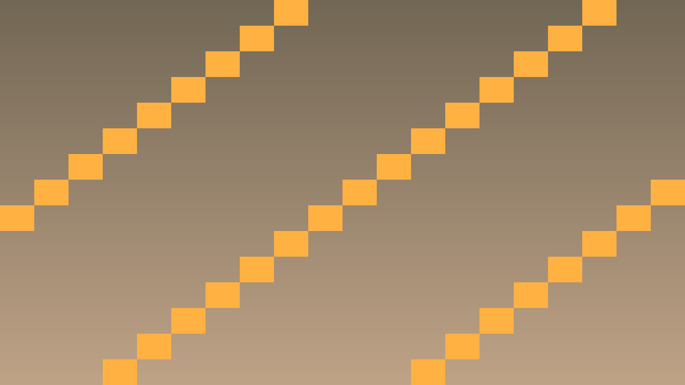
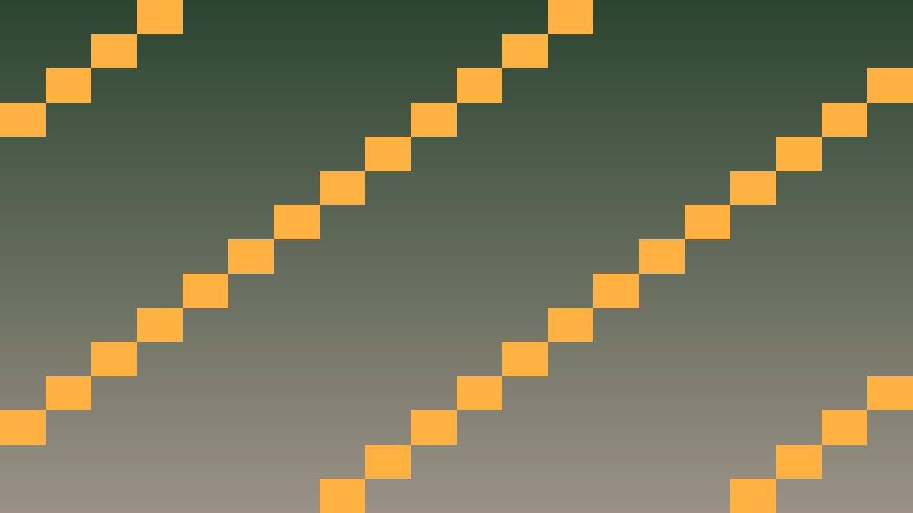

Tavs šīs stundas izaicinājums: Pievienot animācijas UI un spēles objektiem ar AnimationPlayer un Tween.
Priekšzināšanu robeža: uzdevumos izmanto tikai iepriekš apgūto un šīs lapas teorijas/koda piemēros parādīto. Ja parādās jauna komanda vai rīks, vispirms atrod tās paraugu teorijas blokā.
Godot piedāvā divas pieejas animācijām:
#include <godot_cpp/classes/tween.hpp>
// Tween — fade in
void show_button() {
Tween* tween = create_tween();
button->set_modulate(Color(1, 1, 1, 0)); // sākotnēji caurspīdīgs
tween->tween_property(button, "modulate", Color(1, 1, 1, 1), 0.5);
}
// Tween — kustība ar bounce
void shake_button() {
Tween* tween = create_tween();
Vector2 orig = button->get_position();
tween->tween_property(button, "position", orig + Vector2(10, 0), 0.05);
tween->tween_property(button, "position", orig - Vector2(10, 0), 0.05);
tween->tween_property(button, "position", orig, 0.05);
}Kritiskais fokuss: šajā stundā nepietiek tikai panākt redzamu efektu editorā. Jāspēj paskaidrot, kura C++ klase glabā stāvokli, kura metode to maina un kā Godot node struktūra šo kodu izmanto.
Pārbaudes pierādījums: UI signāli, audio darbības, debug izvade un publicēšanas sagatave ir sasaistīta ar C++ spēles stāvokli.
#include <godot_cpp/variant/string.hpp>
using namespace godot;
struct PolishCheckpoint {
String lesson = "6.2 Animācijas un Tween";
bool uses_cpp = true;
bool connects_ui_signals = true;
bool routes_audio_events = true;
bool verifies_export_build = true;
};Atpazīsti šīs stundas galveno ideju un sasaisti to ar gala projektu Puzzle spēle.
.hpp, .cpp vai Godot scēnas failā, nevis uzreiz lielu funkciju.klases_punkti, zvana_taimeris, pazudusais_markieris vai kafijas_pauze; mazliet humora drīkst, bet kodam jāpaliek skaidram.Izmanto šīs stundas prasmi nelielā, strādājošā projekta daļā.
.hpp, .cpp vai Godot scēnas failā, izmantojot teorijas piemēru kā sākumpunktu.Pārbaudi risinājumu, salīdzini rezultātus un atrodi, ko uzlabot.
Pievieno nelielu radošu uzlabojumu ar klases dzīves piemēru, nepārsniedzot apgūto vielu.


#include <godot_cpp/classes/tween.hpp>
void Player::on_take_damage(int amount) {
// Damage number popup
Label* dmg = memnew(Label);
dmg->set_text("-" + String::num_int64(amount));
dmg->set_position(get_position() + Vector2(0, -30));
dmg->add_theme_color_override("font_color", Color(1, 0, 0));
get_parent()->add_child(dmg);
// Tween: peld augšup un izgaist
Tween* tween = dmg->create_tween();
tween->set_parallel(); // abas animācijas paralēli
tween->tween_property(dmg, "position",
dmg->get_position() + Vector2(0, -50), 0.8);
tween->tween_property(dmg, "modulate:a", 0.0, 0.8);
tween->chain()->tween_callback(Callable(dmg, "queue_free"));
// Player flash red
Tween* flash = create_tween();
set_modulate(Color(1, 0, 0));
flash->tween_property(this, "modulate", Color(1, 1, 1), 0.3);
}